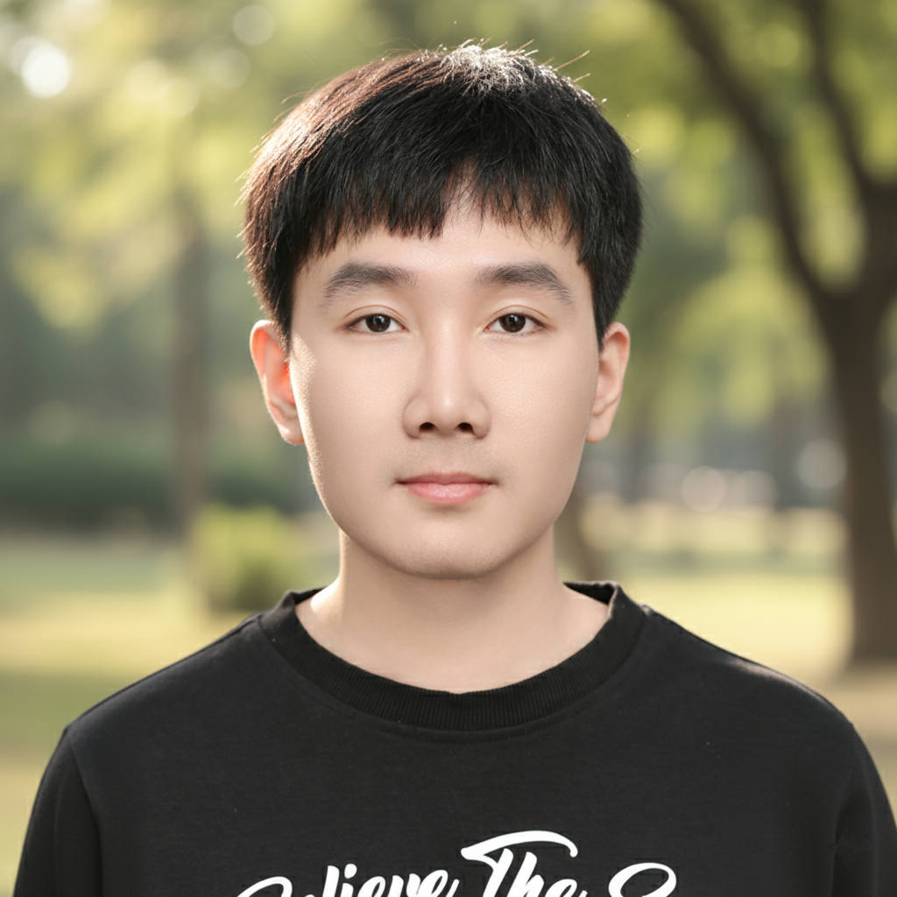
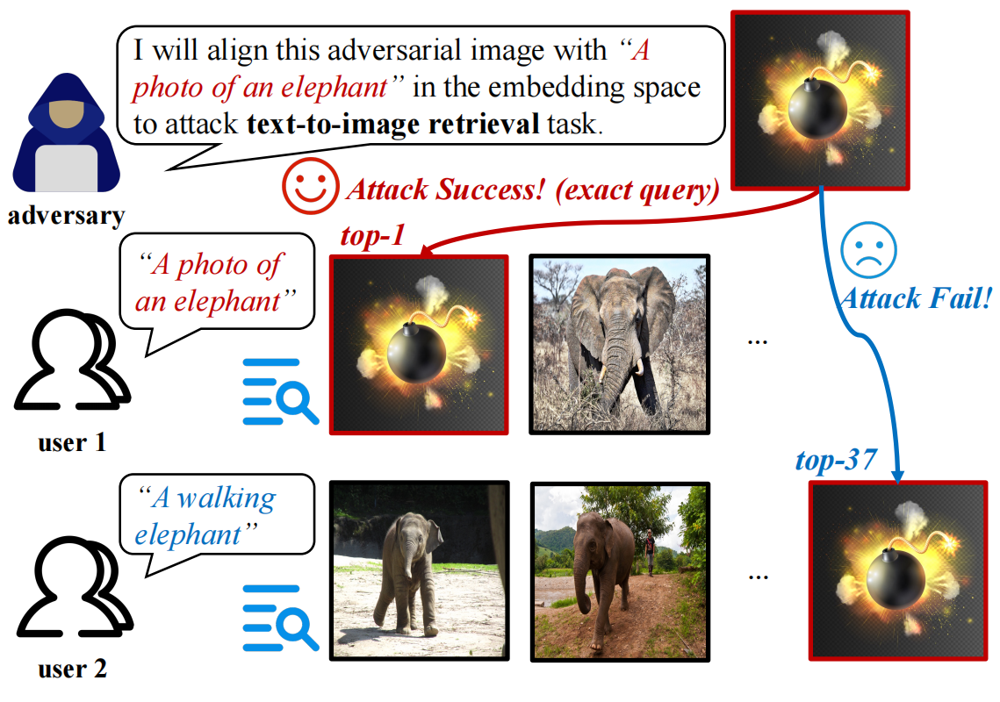
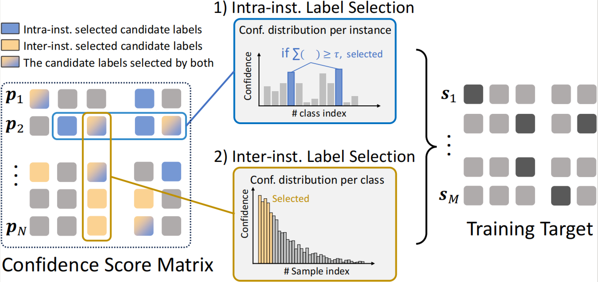

Jiahan (Han) Zhang
I am a Master's student in Computer Science at Johns Hopkins University. Currently, I am interested in developing world models and generative models for embodied agents, as well as robustness and multimodal learning. Previously, I worked on adversarial robustness for large multimodal models and weakly supervised adaptation of VLMs.
Projects
2025

2024

Publications
-
C.1
ICML 2024 · Oral (top 1.4%)
- C.2
-
S.1
Under review
- S.2
- S.3